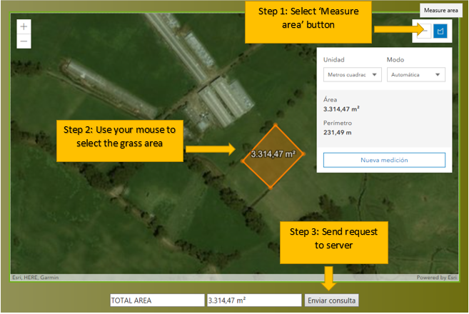

This is a Web Service designed to estimate Kikuyo grass (Pennisetum cladestinum) growth using the BASGRA model, which was developed jointly by Marcel van Oijen, Mats Höglind, David Cameron and Stig Morten Thorsen.
 SEE HERE HOW TO USE THE SERVICE
REFERENCES